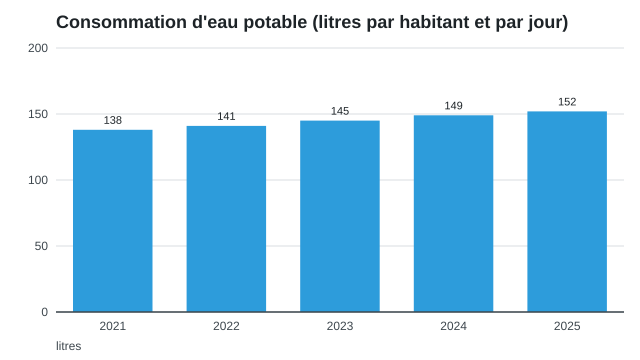

Eau potable : chiffres clés
Le Service des eaux publie chaque année l'évolution de la consommation des ménages.

Le rapport de gestion est disponible au guichet.
Prochains rendez-vous
| Date | Événement |
|---|---|
| 18.9.2026 | Séance d'information à la salle communale |
| 27.11.2026 | Permanence de la syndique |